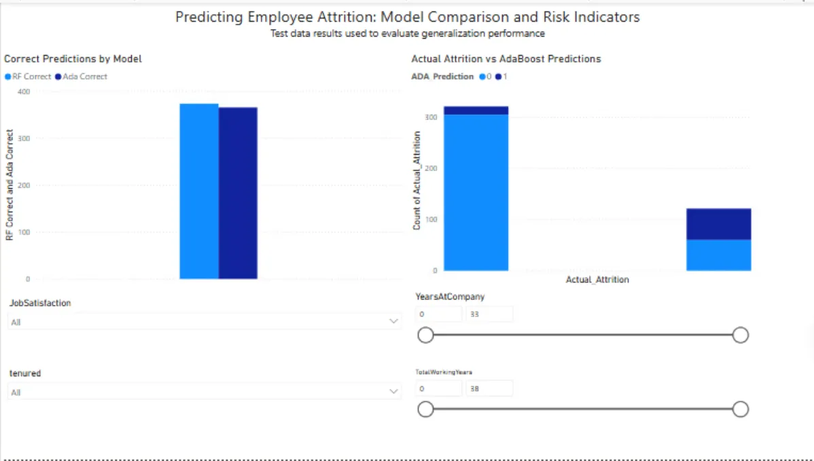
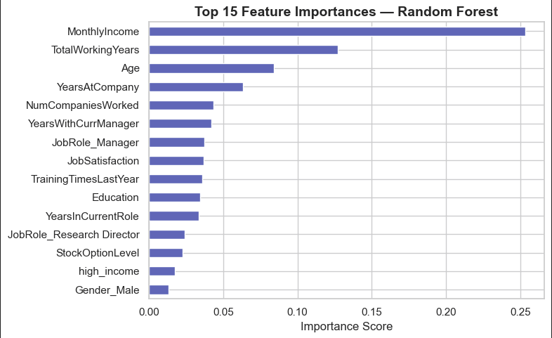
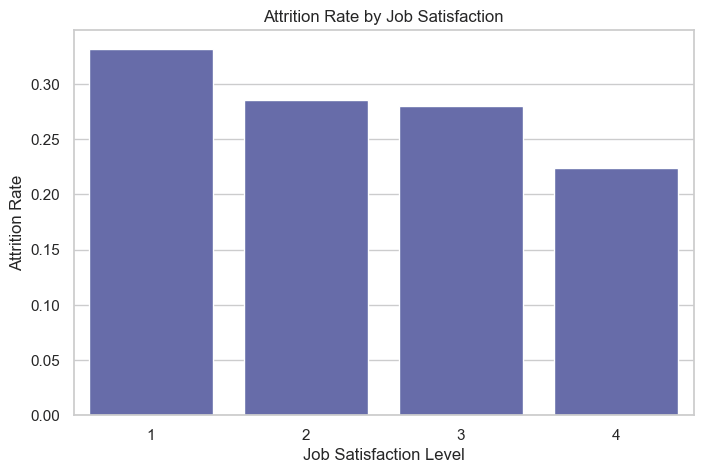
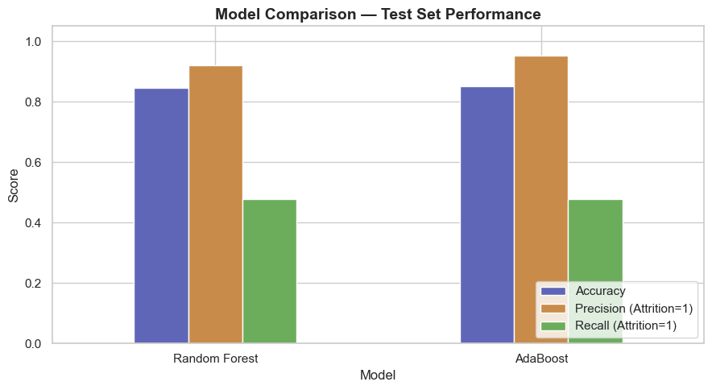
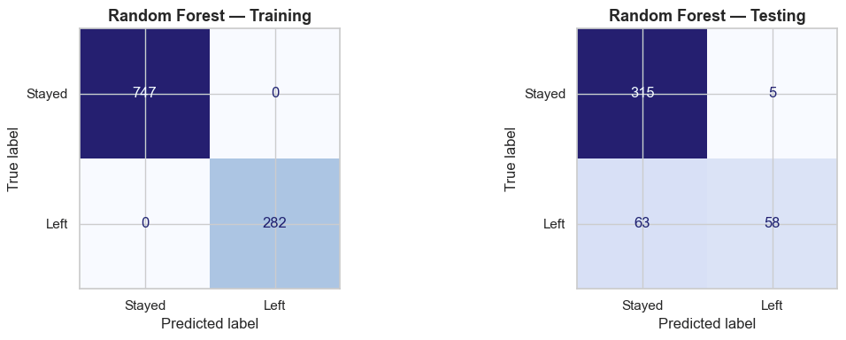
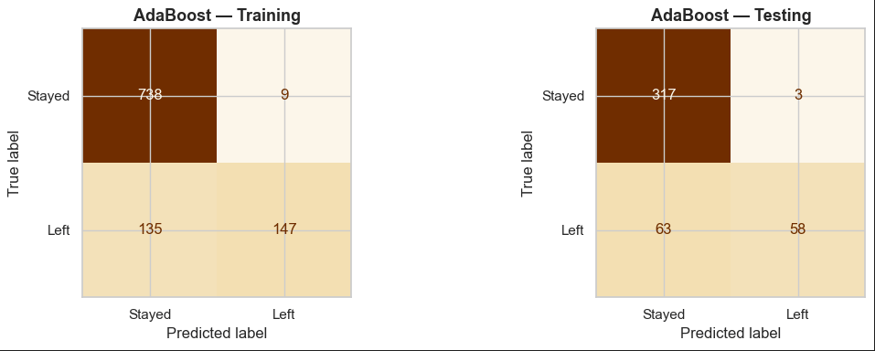

Predicting Employee Attrition
When people leave an organization, reactive hiring is expensive and disruptive. This project builds a machine learning pipeline to flag at-risk employees before they walk out the door — using ensemble models, recall-focused tuning, and a Power BI dashboard to make predictions something a team can actually act on.

Logistic regression using income and manager tenure. Achieved ~70% accuracy but weak recall — proving simple features weren't enough and setting a clear benchmark to beat.
Added high_income and tenured binary flags, plus one-hot encoding for job role, department, gender, and marital status — giving the models richer signals to learn from.
Random Forest and AdaBoost tuned with GridSearchCV optimizing for recall — because missing an at-risk employee costs more than a false alarm. 5-fold cross-validation kept results honest.





Key Findings
The models don't just predict — they surface a consistent story about why employees leave. These findings translate directly into where organizations should focus retention efforts.
-
Compensation is the dominant attrition driver. MonthlyIncome accounts for ~25% of Random Forest's feature importance — nearly double the next predictor. This isn't a soft signal. It's the clearest lever in the dataset.
-
Career stage matters more than satisfaction. TotalWorkingYears, Age, and YearsAtCompany collectively outrank JobSatisfaction as predictors. Early-career and early-tenure employees are disproportionately at risk — retention efforts need to front-load support, not wait for satisfaction surveys to catch problems.
-
Both models struggle with minority class recall (~48%) — and that's expected. Attrition affects only ~16% of the dataset. Recall-focused tuning was the right call, and inflated accuracy numbers would have been the wrong thing to optimize for. Choosing the right metric is part of the analysis.
-
Random Forest overfits; AdaBoost generalizes more honestly. Perfect training scores (747/747, 282/282) don't transfer cleanly to test data. AdaBoost's messier training performance is actually a sign of better generalization behavior — something a raw accuracy number would hide.
-
Job satisfaction is a signal, not a solution. Employees with the lowest satisfaction leave at ~33% — but satisfaction ranks 8th in feature importance. Organizations can't survey their way out of a compensation problem.
Explore the full pipeline
Two Jupyter notebooks, prediction CSVs, HR dataset, and dashboard screenshots — all in the repo.